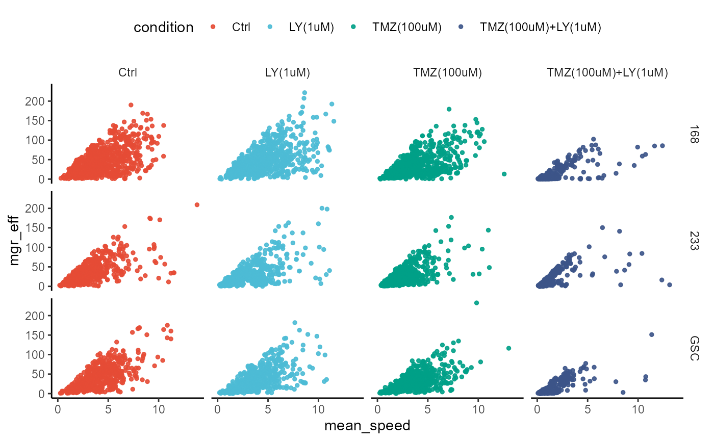

Many arguments in functions come with a default input that is used if the argument is not specified by the user. In cypro many recurring arguments receive their default input by the cypro object with which the function is used. This allows the user to specify the default of many arguments themself.
library(cypro)
object <- readRDS(file = "data/example-tracks.RDS")
printSummary(object)output
## An object of class 'cypro'.
##
## Name: tmz-ly
## Type: Time Lapse
## Number of Cells: 7987
## Conditions:
## First phase: 'Ctrl'
## Second phase: 'Ctrl', 'LY(1uM)', 'TMZ(100uM)' and 'TMZ(100uM)+LY(1uM)'
## Cell Lines: '168', '233' and 'GSC'
## Well Plates: 'one'
## No variables sets have been defined yet.Use the function adjustableDefaultInstructions() to see for which arguments you can specify the default yourself.
# this function does not take any arguments
adjustableDefaultInstructions()output
## [1] "clrp" "clrsp" "color_aes" "method_aggl"
## [5] "method_corr" "method_dist" "method_kmeans" "method_pam"
## [9] "phase" "pt_alpha" "pt_clr" "pt_clrp"
## [13] "pt_clrsp" "pt_fill" "pt_shape" "pt_size"
## [17] "smooth_alpha" "smooth_clr" "smooth_method" "smooth_se"
## [21] "smooth_size" "verbose" "with_cluster" "with_meta"
## [25] "with_well_plate"To see what is currently set as the default use getDefaultInstructions().
getDefaultInstructions(object)output
## $clrp
## [1] "milo"
##
## $clrsp
## [1] "viridis"
##
## $color_aes
## [1] "color"
##
## $method_aggl
## [1] "ward.D"
##
## $method_corr
## [1] "pearson"
##
## $method_dist
## [1] "euclidean"
##
## $method_kmeans
## [1] "Hartigan-Wong"
##
## $method_pam
## [1] "euclidean"
##
## $phase
## [1] "first"
##
## $pt_alpha
## [1] 0.9
##
## $pt_clr
## [1] "black"
##
## $pt_clrp
## [1] "milo"
##
## $pt_clrsp
## [1] "viridis"
##
## $pt_fill
## [1] "black"
##
## $pt_shape
## [1] 19
##
## $pt_size
## [1] 3
##
## $smooth_alpha
## [1] 0.9
##
## $smooth_clr
## [1] "blue"
##
## $smooth_method
## [1] "lm"
##
## $smooth_se
## [1] FALSE
##
## $smooth_size
## [1] 1
##
## $verbose
## [1] TRUE
##
## $with_cluster
## [1] TRUE
##
## $with_meta
## [1] TRUE
##
## $with_well_plate
## [1] TRUEYou can overwrite the default any time by specifying the arguments.
plotScatterplot(
object = object,
variable_x = "mean_speed",
variable_y = "mgr_eff",
across = c("cell_line", "condition"),
color_by = "condition",
phase = 2, # specify to overwrite default
pt_clrp = "npg", # specify to overwrite default
pt_size = 1 # specify to overwrite default
) + legendTop()
To minimize typing you can adjust the arguments default use adjustDefaultInstructions().
# set the default to save future typing
object <-
adjustDefaultInstructions(
object = object,
phase = 2,
pt_clrp = "npg",
pt_size = 1
)
plotScatterplot(
object = object,
variable_x = "mean_speed",
variable_y = "mgr_eff",
across = c("cell_line", "condition"),
color_by = "condition"
) + legendTop()